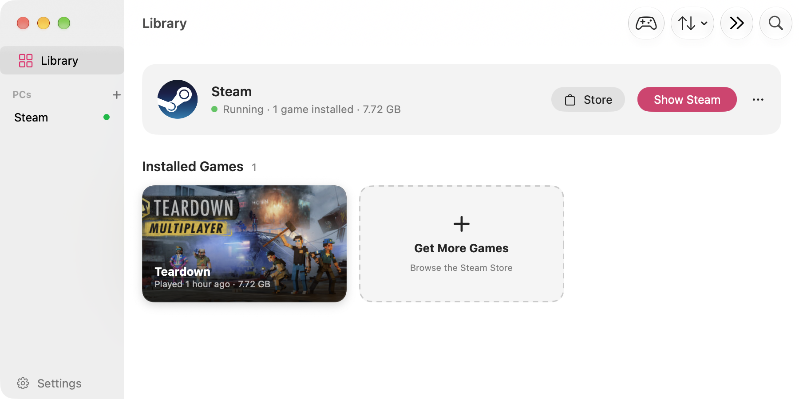

Gmac application
SwiftUI application, GmacKit core package, GmacCmd Dock launcher, and GmacThumbnail Quick Look extension.
Gmac provisions isolated Windows environments on macOS, organizes installed titles in one library, and routes DirectX 9 through 12 to Metal.

SwiftUI application, GmacKit core package, GmacCmd Dock launcher, and GmacThumbnail Quick Look extension.
Patched Wine and CrossOver source tree carrying the macOS display driver, Retina scaling, and D3DMetal fixes.
Metal implementation of Direct3D 10 and 11 for macOS, plus the gmacmetal Direct3D 12 bridge.
Single-player ScriptHookV replacement for GTA V Enhanced using data-driven native tables and signature files.
Requires an Apple Silicon Mac running macOS 15 or later with Xcode 16 or later. First launch migrates data from earlier com.rolling7ho.Vodka and com.rolling7ho.Whisky builds.
git clone https://github.com/rolling7ho/gmac.git
cd gmac
scripts/install-local.sh
# Run unit tests
swift test --package-path GmacKitGmac/ SwiftUI application target
GmacKit/ Wine, bottles, library, and GameDB package
GmacCmd/ Command-line helper for Dock shortcuts
GmacThumbnail/ Quick Look thumbnails for .exe files
scripts/ Build, release, and localization scripts
runtime/ Local runtime build driverGmac downloads its Wine runtime archive during initial setup. See the runtime workbench guide before building custom archives.
Guides mirrored directly from the main branch.